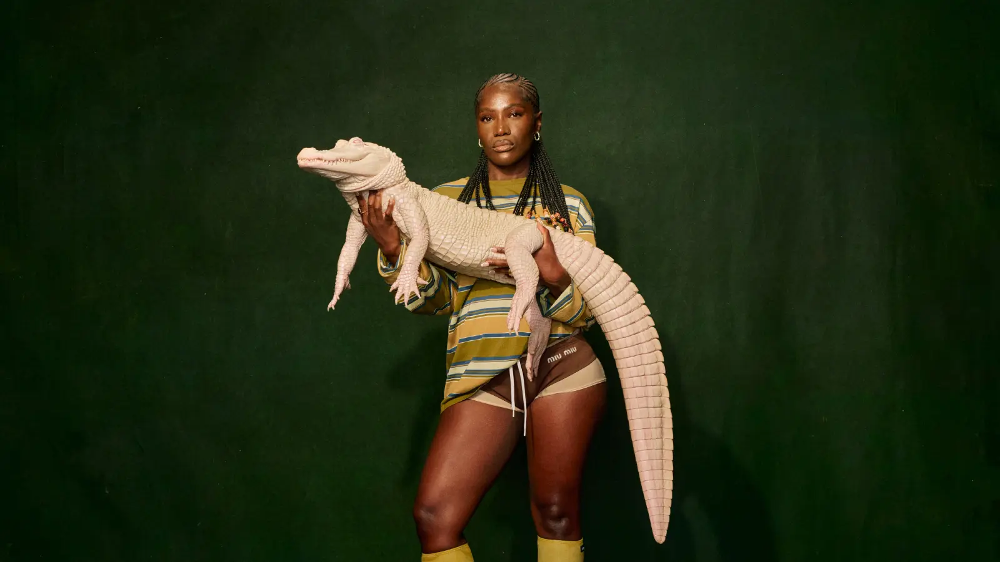

|
|
Género: Hip-hop, Rap alternativo, Jazz, R&B, Electrónica, Punk
Formación: Ladera Heights, California, EE. UU. (1991)
Nombre real: Tyler Gregory Okonma
Tyler, The Creator es un artista conocido por su enfoque ecléctico y vanguardista hacia el hip-hop y la música en general. Desde sus inicios como miembro del colectivo Odd Future, ha trascendido las expectativas del rap convencional, fusionando géneros como el jazz, el R&B, la electrónica, el punk y la música experimental. Su estilo ha sido definido por sus inconfundibles producciones, en las que mezcla ritmos oscuros y experimentales con letras a menudo provocadoras, personales y filosóficas.
Tyler se destaca por su capacidad para reinventar el sonido del hip-hop, aportando una creatividad visual y sonora que lo coloca a la vanguardia de la música contemporánea. Su habilidad para desafiar las normas del género lo ha convertido en un referente no solo musical, sino también en el ámbito de la moda, la cultura visual y el arte en general.
Tyler, The Creator ha sido un pionero en la exploración de nuevos sonidos dentro del hip-hop, al mezclar influencias de géneros como el rock alternativo, el jazz experimental y el R&B en su música. Desde sus primeros trabajos, ha desafiado las normas de la industria musical, utilizando su arte para explorar temas como la identidad, la lucha interna, el amor y la rebeldía.
Una de las características que distingue a Tyler es su enfoque autodidacta. Desde la producción hasta la composición, pasando por la dirección artística y los videoclips, Tyler tiene un control total sobre su música y su imagen, lo que le permite crear una experiencia cohesiva y auténtica para su audiencia. Además, su habilidad para evolucionar constantemente con cada álbum, explorando nuevos sonidos y narrativas, ha consolidado su estatus como uno de los artistas más innovadores de su generación.
"Goblin" (2011)
El álbum debut de Tyler, Goblin, fue una declaración de intenciones. Con un estilo oscuro, áspero y emocionalmente cargado, este trabajo explora las luchas internas de Tyler, así como su visión del mundo. Canciones como "Yonkers" y "Goblin" son emblemáticas de su estilo provocador y experimental, marcando el inicio de su carrera en solitario.
"Wolf" (2013)
En Wolf, Tyler comenzó a mostrar una evolución musical, ampliando su paleta sonora y añadiendo más matices emocionales a su música. Con un enfoque más melódico y menos agresivo que su trabajo anterior, el álbum cuenta con canciones como "Domo 23" y "IFHY", que exploran temas de amor, celos y relaciones. Esta producción se destacó por sus arreglos musicales complejos y su estilo más maduro.
"Flower Boy" (2017)
Con Flower Boy, Tyler dio un giro hacia un sonido más suave y melódico, mezclando elementos de jazz, R&B y música experimental. Este álbum, ampliamente aclamado por la crítica, le valió su primer Grammy y lo consolidó como un artista innovador y vanguardista. Canciones como "See You Again" y "911 / Mr. Lonely" muestran su capacidad para fusionar sonidos únicos con una lírica profundamente personal, abordando temas como la identidad, la soledad y el amor en una forma nunca antes vista en su discografía.
"IGOR" (2019)
IGOR es considerado uno de los puntos culminantes de la carrera de Tyler. Con un enfoque más electrónico y experimental, este álbum muestra una gran madurez en términos de producción y escritura. A través de su estilo único, IGOR explora temas de amor no correspondido, dolor y aceptación, mientras utiliza una mezcla de géneros y sonidos que van desde el rap hasta el funk y la música electrónica. IGOR ganó el Grammy al Mejor Álbum de Rap, lo que reafirmó la importancia de Tyler en la escena musical.
"Call Me If You Get Lost" (2021)
En Call Me If You Get Lost, Tyler regresó a un sonido más fuerte y enérgico, con influencias del rap clásico y el hip-hop de la vieja escuela, pero sin dejar de lado su carácter experimental y vanguardista. Este álbum recibió una amplia aclamación crítica, con canciones como "Lumberjack" y "WUSYANAME" que exploraron temas de riqueza, poder, y la dualidad de la fama. El álbum mostró el continuo crecimiento de Tyler como productor y como narrador de historias complejas y emocionales.
Tyler, The Creator ha sido un cambio de paradigma dentro del mundo del hip-hop. Su capacidad para desafiar las normas del género, tanto musicalmente como en cuanto a su identidad personal, lo ha convertido en un referente cultural para una generación que busca autenticidad y libertad de expresión. Su enfoque sin filtros, junto con sus exploraciones sobre temas como la masculinidad, la sexualidad y la salud mental, ha generado una profunda conexión con una audiencia diversa.
A través de su música, sus videos, y su marca personal, Tyler ha construido un mundo único donde la moda, el arte y la música se encuentran en constante diálogo. Además, su capacidad para manejar su propio negocio y dirección artística lo ha posicionado como una figura central en la industria musical, influyendo en la forma en que otros artistas se relacionan con su imagen y su producción.
Premio Grammy: Mejor Álbum de Rap por IGOR (2020)
Nominaciones al Grammy: Mejor Álbum de Rap por Flower Boy (2018)
Premio MTV Video Music Award: Mejor Video de Rap por "Yonkers" (2011)
Reconocimientos internacionales: Tyler ha sido incluido en numerosas listas de "Mejores Álbumes del Año" y ha sido elogiado por su influencia en la cultura del hip-hop y la música en general.
Creatividad sin límites: Tyler ha roto las barreras del género, creando un sonido que no puede clasificarse fácilmente, y ha sido pionero en la incorporación de géneros diversos, como el jazz, el R&B y el punk, dentro del rap.
Autenticidad y evolución: Desde sus primeros días en Odd Future hasta su carrera en solitario, Tyler ha mantenido su autenticidad, desafiando las expectativas de la industria musical y reinventándose con cada álbum.
Visión artística integral: Tyler no es solo un músico; es un creador multifacético que se involucra en todos los aspectos de su arte, desde la producción hasta la dirección visual, creando una experiencia completa para sus fanáticos.
Exploración de la identidad: Tyler ha sido un referente para hablar sobre la identidad, la masculinidad, la sexualidad y la salud mental, contribuyendo a una conversación cultural relevante dentro y fuera del hip-hop.
 |
 |
|
 |
 |
 |